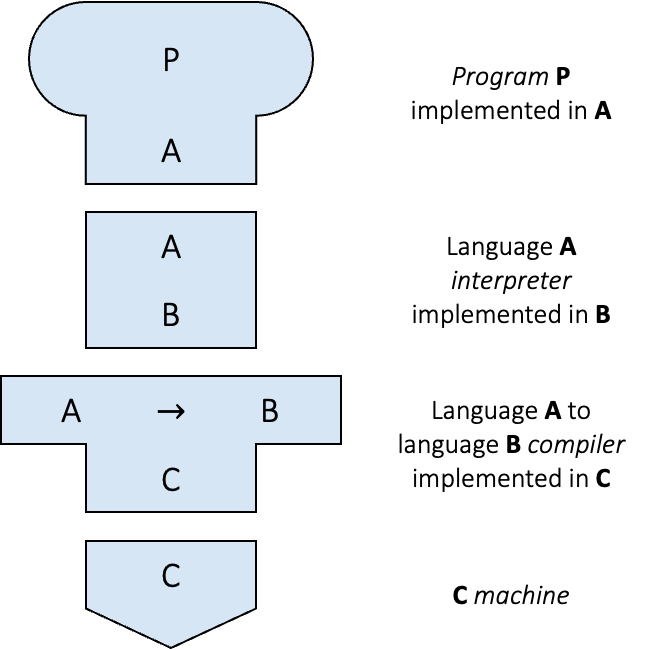
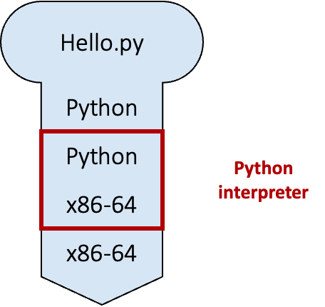
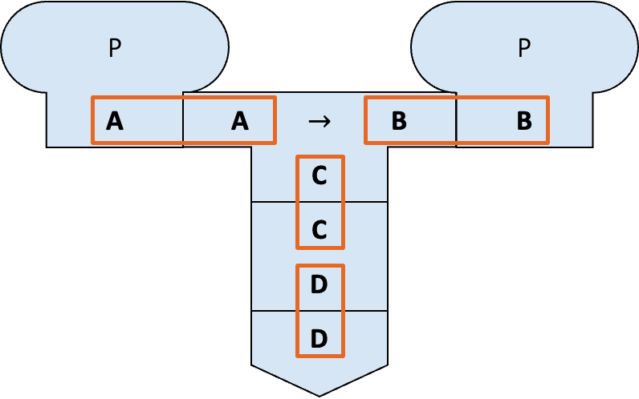
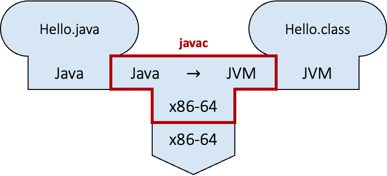
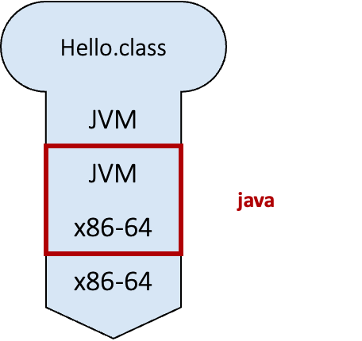
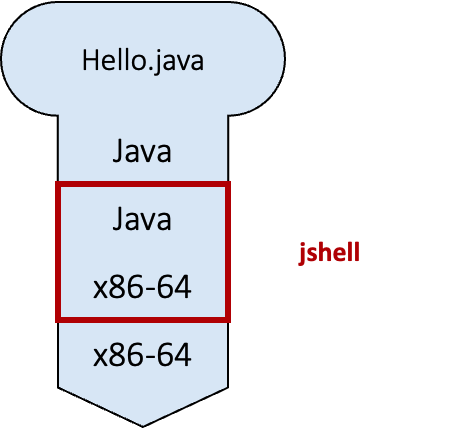

Unit 1: Program and Compiler
Learning Objectives
After this unit, students should
- recap some fundamental programming concepts, including the concept of a program, a programming language, a compiler, and an interpreter.
- be aware of two modes of running a Java program (compiled vs. interpreted).
- be aware that compile-time errors are better than run-time errors, but the compiler cannot always detect errors during compile time.
Software Program
A software program is a collection of data variables and instructions on how to modify these variables. To dictate these instructions to the computer, programmers usually write down the instructions using a programming language, expressing their instructions in code that is made up of keywords, symbols, and names.
A programming language is a formal language that helps programmers specify precisely what the instructions are at a higher level of abstraction (i.e., at a higher conceptual level) so that a programmer only needs to write a few lines of code to give complex instructions to the computer.
Compiled vs. Interpreted Programs
The processing unit of a computer can only accept and understand instructions written in machine code. A program, written in a higher-level programming language, therefore needs to be translated into machine code before execution. There are different approaches to how such translations can be done. The first approach uses a compiler — a software tool that reads the entire program written in a higher-level programming language and translates it into machine code. The machine code is then saved into an executable file, which can be executed later. clang, a C/C++ compiler, is an example. The second approach uses an interpreter — software that reads in the program one statement at a time interprets what the statement means, and executes it directly. This is how Python and Javascript programs are executed.
Modern programming systems for executing programs are, however, more sophisticated. V8, for instance, is an open-source engine that executes Javascript, and it contains both an interpreter that first interprets a Javascript program into bytecode (an intermediate, low-level representation) and its execution engine. A just-in-time compiler then reads in the bytecode and generates machine code dynamically at runtime with optimized performance.
Java programs, on the other hand, can be executed in two ways:
- The Java program can first be compiled into bytecode. During execution, the bytecode is interpreted and compiled on the fly by the Java Virtual Machine (JVM) into machine code.
- The Java program can be interpreted by the Java interpreter.
To better understand this distinction, we will introduce a visual aid to describe the relationships between programs, compilers, interpreters, and machines.
Tombstone Diagrams (T-Diagrams)
Tombstone Diagrams or T-diagrams consist of combinations of the following four components:
- Programs which are implemented in a particular language (i.e.,
Java,Python,C/C++) - Language A Interpreters implemented in language B
- Language A to language B Compilers which are implemented in a language C
- Physical Machines implementing a particular language (i.e., x86-64, ARM-64)
These components are represented in T-diagrams as shown in the figure below:

We can treat these components like "puzzle pieces" and build diagrams to describe various execution, compilation, or interpreted processes. For example, in the diagram below, a Python script Hello.py is being interpreted by the Python interpreter running on the x86-64 architecture.

Note: In order for the diagram to be valid, adjacent connected diagram components need to match. This can be seen in the diagram below (highlighted with blue boxes).

Since CS2030/S uses Java, we will now look at the two approaches to execute a Java program in more detail (without worrying about how to write a single line of Java first).
Compiling and Running Java Programs
Suppose we have a Java program called Hello.java. To compile the program, we type1
1 | |
into the command line. javac is the Java compiler. This step will either lead to the bytecode called Hello.class being created or generate some errors. This process can be seen in the figure below, where the Hello.java program is compiled from Java to the JVM language (bytecode). The Java compiler javac in this diagram is implemented in the x86-64 machine language.

Assuming that there is no error in compilation, we can now run
1 | |
to invoke the JVM java and execute the bytecode contained in the file Hello.class. This can be seen in the figure below, where the Hello.class program is interpreted from JVM language (bytecode) to the x86-64 machine language.

Beginners tend to confuse between javac and java, and whether to add the extension .java or .class when compiling and executing a Java program. Do take note and refer back here if needed2.
Common Mistakes
A common mistake when compiling and running a Java program is to use the java command on a .java file instead of the javac command.
To make matters worse, you can sometimes run the .java program using the java command seemingly bypassing the need for compilation using the javac command.
This feature is called "Launch Single-File Source-Code Programs".
In general, avoid the following command:
1 | |
Interpreting a Java program
Java (version 8 or later) comes with an interpreter called jshell that can read Java statements, evaluate them, and print the results3. jshell is useful for learning and experimenting with Java. This can be seen in the figure below, where the Hello.java program is interpreted from Java directly to the x86-64 machine language.

To run jshell in interactive mode, we type
1 | |
on the command line, which causes an interactive prompt to appear:
1 2 3 4 5 | |
We can now type in Java code on jshell>.
Alternatively, we can also include all the Java statements that we want jshell to run in a file and pass it into jshell
1 | |
While jshell is a convenient way to test things out and play with new Java concepts as we learn, do keep in mind that jshell combines both compilation and run-time into a single step. The error spewed out by jshell could be either a compile-time error or a run-time error, and this could be confusing to beginners who try to distinguish between the two phases of program execution.
jsh vs java
Files intended to be run on jshell typically uses .jsh extension while files intended to be compiled and run use .java extension. However, this difference is merely a convention. You can still interpret .java program on jshell.
Compiler
Quote
"One man's program is another program's data."
Olivier Danvy
The compiler does more than just translate source code into machine code or bytecode. The compiler also needs to parse the source code written and check if it follows the precise specification of the programming language (called grammar) used, and produces a syntax error if the grammar is violated. It therefore can detect any syntax error before the program is run.
It is much better for a programmer to detect any error in its code during compilation — since this is the phase when the program is still being developed and under the control of the programmer. Runtime error, on the other hand, might occur when the customers are running the program, and so are much less desirable. As such, we try to detect errors as much as possible during compilation. The compiler is a powerful friend for any programmer if used properly.
The power of the compiler, however, is limited. A compiler can only read and analyze the source code without actually running it. Without running the program, the compiler cannot always tell if a particular statement in the source code will ever be executed; it cannot always tell what values a variable will take.
To deal with this, the compiler can either be conservative, and report an error as long as there is a possibility that a particular statement is incorrect; or, the compiler can be more permissive, reporting an error only if there _is no _possibility that a particular statement is correct. If there is a possibility that a particular statement is correct, it does not throw an error but relies on the programmer to do the right thing. We will further contrast these two behaviors later in this module.
-
The
$represents the command prompt in a shell and you do not need to type this. ↩ -
To add to the confusion, Java 11 introduces a shortcut where we can run
java Hello.javadirectly. This command causesHello.javato be compiled and executed in a single step. We won't do this in CS2030/S (i) to avoid confusion and (ii) to show you the steps explicitly. ↩ -
Such a program is called REPL (Read-Evaluate-Print in a Loop) for short. ↩